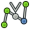
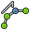

El entorno de simulación de robots es una herramienta para simular un Robot industrial de 6 ejes, como Kuka. Puedes hacer las siguientes tareas:
- Configurar un entorno de simulación con un robot y piezas de trabajo
- Crea y cubrir trayectorias
- Descomponer características de una pieza de CAD en una trayectoria
- Simular el movimiento y la accesibilidad del robot
- Exportar la trayectoria a un archivo del programa del robot
Puedes encontrar un ejemplo aquí: Archivos de ejemplo o prueba el Tutorial de simulación de Robots.
Contents
Herramientas
Aquí están los principales comandos que puedes utilizar para crear la configuración de un robot.
Robots
Las herramientas para crear y manejar los robots de 6 ejes
- Crea un robot: Inserta un nuevo robot en la escena
-
 Simula una trayectoria: Abre el letrero de diálogo de simulación y te permite simular
Simula una trayectoria: Abre el letrero de diálogo de simulación y te permite simular -
 Exportar una trayectoria: Exporta un archivo del programa del robot
Exportar una trayectoria: Exporta un archivo del programa del robot -
 Establece la posición de inicio: Establece la posición de inicio para un robot
Establece la posición de inicio: Establece la posición de inicio para un robot -
 Restablece la posición de inicio: Mueve el robot a su posición de inicio
Restablece la posición de inicio: Mueve el robot a su posición de inicio
{kind=link}
Trayectorias
Herramientas para crear y manipular trayectorias. Existen dos tipos, las paramétricas y las no paramétricas.
Trayectorias no paramétricas
-
 Crea una trayectoria: Inserta una nuevo objeto de trayectoria vacía en la escena
Crea una trayectoria: Inserta una nuevo objeto de trayectoria vacía en la escena -
 Establece la orientación por defecto: Establece la orientación en los puntos de paso creados por defecto
Establece la orientación por defecto: Establece la orientación en los puntos de paso creados por defecto -
 Establece los parámetros de velocidad por defecto: Establece los valores por defecto para la creación de los puntos de paso
Establece los parámetros de velocidad por defecto: Establece los valores por defecto para la creación de los puntos de paso -  Inserta un punto de paso: Inserta un punto de paso desde la posición actual del robot en una trayectoria
-
 Inserta un punto de paso: Inserta un punto de paso desde las posición actual del ratón en una trayectoria
Inserta un punto de paso: Inserta un punto de paso desde las posición actual del ratón en una trayectoria
{kind=link}
trayectorias paramétricas
-
 Create a trajectory out of edges: Inserta un nuevo objeto que descompone los bordes en una trayectoria
Create a trajectory out of edges: Inserta un nuevo objeto que descompone los bordes en una trayectoria -  Dress-up a trajectory: Le permite sobreescribir una o más propiedades de una trayectoria
-
 Trajectory compound: crea un compuesto a partir de algunas trayectorias individuales
Trajectory compound: crea un compuesto a partir de algunas trayectorias individuales
{kind=link}
Archivos de guión
Esta sección se genera en: https://github.com/FreeCAD/FreeCAD_sf_master/blob/master/src/Mod/Robot/RobotExample.py Puedes utilizar este archivo directamente si quieres.
Ejemplo de cómo utilizar la clase Robot6Axis básica que representa a un robot industrial de 6 ejes. El módulo de Robot es dependiente del de Piezas pero no de otros módulos. Trabaja principalmente con los tipos básicos de Ubicación, Vector y Matriz. Así que necesitamos sólo:
from Robot import * from Part import * from FreeCAD import *
Cosas básicas del robot
Crear el robot. Si no se especifica otra cinemática será la de un Puma 560
rob = Robot6Axis() print rob
accediendo a los ejes y TCP. Los ejes van de 1 a 6 y están en grados decimales:
Start = rob.Tcp print Start print rob.Axis1
mueve el primer eje del robot:
rob.Axis1 = 5.0
the Tcp has changed (forward kinematic)
print rob.Tcp
mueve el robot de vuelta a la posición de inicio (cinemática inversa):
rob.Tcp = Start print rob.Axis1
lo mismo con el eje 2:
rob.Axis2 = 5.0 print rob.Tcp rob.Tcp = Start print rob.Axis2
Puntos de paso:
w = Waypoint(Placement(),name="Pt",type="LIN") print w.Name,w.Type,w.Pos,w.Cont,w.Velocity,w.Base,w.Tool
Genera más. La trayectoria siempre encuentra automáticamente un nombre único para los puntos de paso
l = [w] for i in range(5): l.append(Waypoint(Placement(Vector(0,0,i*100),Vector(1,0,0),0),"LIN","Pt"))
crea una trayectoria
t = Trajectory(l) print t for i in range(7): t.insertWaypoints(Waypoint(Placement(Vector(0,0,i*100+500),Vector(1,0,0),0),"LIN","Pt"))
mira una lista de todos los puntos de paso:
print t.Waypoints del rob,Start,t,l,w
Trabajando con los objetos del documento
Trabajando con los objetos del documento del robot: Primero crea un robot en el documento activo
if(App.activeDocument() == None):App.newDocument()
App.activeDocument().addObject("Robot::RobotObject","Robot")
Define la representación visual y la definición cinemática (mira Robot de 6 ejes y Preparación VRML para la simulación del robot para más detalles al respecto)
App.activeDocument().Robot.RobotVrmlFile = App.getResourceDir()+"Mod/Robot/Lib/Kuka/kr500_1.wrl" App.activeDocument().Robot.RobotKinematicFile = App.getResourceDir()+"Mod/Robot/Lib/Kuka/kr500_1.csv"
start positon of the Axis (only that which differ from 0)
App.activeDocument().Robot.Axis2 = -90 App.activeDocument().Robot.Axis3 = 90
Recupera la posición de TCP
pos = FreeCAD.getDocument("Unnamed").getObject("Robot").Tcp
mueve el robot
pos.move(App.Vector(-10,0,0))
FreeCAD.getDocument("Unnamed").getObject("Robot").Tcp = pos
crea una objeto de trayectoria vacía en el documento activo
App.activeDocument().addObject("Robot::TrajectoryObject","Trajectory")
Obtiene la trayectoria
t = App.activeDocument().Trajectory.Trajectory
añade la posición TCP real del robot a la trayectoria
StartTcp = App.activeDocument().Robot.Tcp t.insertWaypoints(StartTcp) App.activeDocument().Trajectory.Trajectory = t print App.activeDocument().Trajectory.Trajectory
inserta algunos puntos de paso y los puntos de inicio y final de nuevo:
for i in range(7): t.insertWaypoints(Waypoint(Placement(Vector(0,1000,i*100+500),Vector(1,0,0),i),"LIN","Pt")) t.insertWaypoints(StartTcp) # end point of the trajectory App.activeDocument().Trajectory.Trajectory = t print App.activeDocument().Trajectory.Trajectory
Simulación
Pendiente.....
Exportación de la trayectoria
La trayectoria se exporta en Python. Eso significa que para cada tipo de armario de control existe un módulo de Python de post-procesado. Aquí está en detalle el post-processor Kuka descrito
from KukaExporter import ExportCompactSub ExportCompactSub(App.activeDocument().Robot,App.activeDocument().Trajectory,'D:/Temp/TestOut.src')
y esos es cómo se crea:
for w in App.activeDocument().Trajectory.Trajectory.Waypoints:
(A,B,C) = (w.Pos.Rotation.toEuler())
print ("LIN {X %.3f,Y %.3f,Z %.3f,A %.3f,B %.3f,C %.3f} ; %s"%(w.Pos.Base.x,w.Pos.Base.y,w.Pos.Base.z,A,B,C,w.Name))
Tutorials